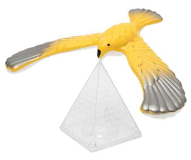
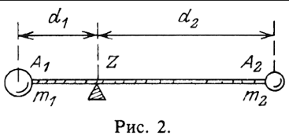

Теоретическая часть
Понятие центра масс
Центр масс — очень старый раздел геометрии. Идея этого метода принадлежит древнегреческому ученому и инженеру Архимеду.Еще в III в. до н. э. он обнаружил возможность доказывать новые математические факты с помощью свойств центра масс (центра тяжести)
В частности, этим способом им была установлена теорема о том, что три медианы треугольника пересекаются в одной точке. Соображения Архимеда были позднее использованы и развиты многими геометрами (Папп, Чева, Гюльден, Люилье и др.).
Что такое центр масс?
В физике под материальной точкой понимают тело, размерами которого можно пренебречь при сравнении их с расстояниями до других тел, рассматриваемых в задаче. Такое «малое тело» рассматривают как геометрическую точку (т. е. считают, что вся масса тела сосредоточена в одной точке).
Понятие центра масс будем рассматривать на физическом уровне строгости.

На рисунке изображена игрушка – птица, которая может устойчиво держаться на клюве. Эта картинка иллюстрирует понятие центра масс. Если поднимать пирамиду, то птица вращаться не будет, т.е. она будет сохранять свое положение. Значит, у птицы есть центр масс, и он находится где-то на оси пирамиды.
Формальное определение центра масс формулируют так:
Центр масс – это точка, через которую должна проходить линия действия силы, чтобы под действием этой силы тело двигалось поступательно (не вращалось).
Свойства центра масс
Для решения геометрических задач используются следующие интуитивно ясные и имеющие простой механический смысл свойства центра масс:
1.Существование и единственность. Всякая система, состоящая из конечного числа материальных точек, имеет центр масс и притом единственный.
2.Правило группировки. Если в системе, состоящей из конечного числа материальных точек, отметить несколько материальных точек и массы всех отмеченных точек перенести в их центр масс, то от этого положение центра масс всей системы не изменится.
3.Правило рычага. Центр масс двух материальных точек расположен на отрезке, соединяющем эти точки, а его положение определяется архимедовым правилом рычага. (рис. 2)

Правило рычага: произведение массы материальной точки на расстояние от нее до центра масс одинаково для обеих точек, т.е. m1·d1 = m2·d2, где m1, m2·— массы материальных точек, а d1, d2 — соответствующие плечи, т.е. расстояния от материальных точек до центра масс.
Эти свойства, несмотря на их простоту, являются мощным средством доказательства теорем и решения геометрических задач. Конечно, сформулированные свойства должны быть обоснованы. Существует математическое определение центра масс, т.е. «произведена математизация изложенной наглядной картины», но в своей работе я не ставил задачу изложить эту «математизацию».